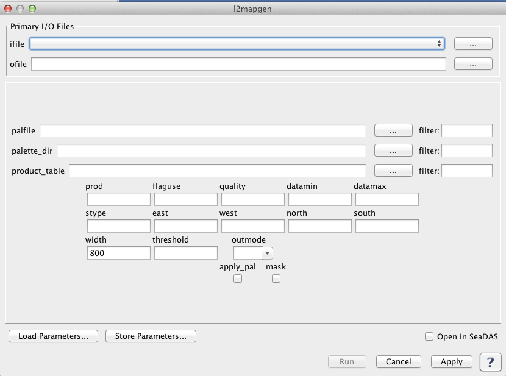

| l2mapgen | |
Creates a Level 2 mapped image.
Location
Details
Command Line Usage
Tools -> OCSSW Processing -> l2mapgen
<l2mapgen takes a product from a L2 file, maps it using a Plate Carree cylindrical projection, and produces a gray scale PGM or color PPM file.
|  |
| UI Element Name | Type | Description | Required/Optional | Default Value |
| ifile | Text Field | Input Level 2 data product. | Required | |
| ofile | Text Field | Output filename for generated level 2 image file. | Required | |
| palfile | Text Field | palette file name | Optional | |
| palette_dir | Text Field | palette directory | Optional | $OCDATAROOT/common/palette |
| product_table | Text Field | product table | Optional | $OCDATAROOT/common/smigen_product_table.dat |
| prod | Text Field | product name | Optional | |
| flaguse | Text Field | flags to be masked | Optional | |
| quality | int | minimum allowable quality level for SST. Valid only for SST and only if qual_sst or qual_sst4 SDS exist | Optional | 2 |
| datamin | float | minimum value for data scaling | Optional | 0.0 or see SMI product table |
| datamax | float | maximum value for data scaling | Optional | 0.0 or see SMI product table |
| stype | int | scaling type:
1: linear
2: log
|
Optional | 0 or see SMI product table |
| east | float | Map East longitude | Optional | 0.0 or scene(s) Easternmost Longitude |
| west | float | Map West longitude | Optional | 0.0 or scene(s) Westernmost Longitude |
| north | float | Map North longitude | Optional | 0.0 or scene(s) Northernmost Longitude |
| south | float | Map South longitude | Optional | 0.0 or scene(s) Southernmost Longitude |
| width | int | width of the output image | Optional | 800 |
| threshold | float | minimum percentage of the area of interest that must receive valid pixel data before an image is generated | Optional | 5 |
| outmode | Text Field (String) | format of the output file :
ppm: PPM or PGM image file (alias 1)
png: PNG color or grayscale image file (alias 2)
tiff: TIFF color or grayscale geo tiff image file (alias 3)
|
Optional | ppm |
| apply_pal | boolean | apply color palette | Optional | false (gray scale) |
| mask | boolean | apply mask to land, cloud and glint | Optional | no |
| UI Element Name | Type | Description |
| Browser Button | Button | Selects infile/ofile |
| Load Parameters ... | Button | Reads in previously saved parameters and populates the fields in GUI. |
| Save Parameters ... | Button | Saves the current arguments in GUI in a file. |
| Run | Button | Executes the l2mapgen command with arguments provided in the UI. |
| Cancel | Button | Closes current processor GUI. |
| Apply | Button | Makes current arguments effective. |
| Open in SeaDAS | Checkbox | If selected, the ofile will be added to the open products list right after its generation. |
| ? | Button | Displays the help content of the current command. |
Usage: l2mapgen argument-list
This program takes a product from a L2 file, maps it using a Plate
Carree cylindrical projection, and produces a gray scale PGM or
color PPM file.
The argument-list is a set of keyword=value pairs. The arguments can
be specified on the commandline, or put into a parameter file, or the
two methods can be used together, with commandline over-riding.
The list of valid keywords follows:
-help (boolean) (alias=-h,--help) (default=false) = print usage information
-version (boolean) (alias=--version) (default=false) = print the version
information
-dump_options (boolean) (alias=--dump_options) (default=false) = print
information about each option
-dump_options_paramfile (ofile) (alias=--dump_options_paramfile) = print
information about each option to paramfile
-dump_options_xmlfile (ofile) (alias=--dump_options_xmlfile) = print
information about each option to XML file
par (string) = input parameter file
ifile (ifile) = input L2 file name or file with a list of files names
ofile (ofile) = output map filename (NULL=STDOUT)
prod (string) = product name
apply_pal (boolean) (default=false) = apply color palette, false = grayscale
palfile (ifile) (default=default) = palette filename
palette_dir (ifile) (default=$OCDATAROOT/common/palette) = palette directory
product_table (ifile) (default=$OCDATAROOT/common/smigen_product_table.dat) = product table
flaguse (string) = flags to be masked
quality (int) (default=2) = minimum allowable quality level for SST. Valid
only for SST and only if qual_sst or qual_sst4 SDS exist
mask (boolean) (default=no) = apply mask to land, cloud and glint (see below)
datamin (float) (default=0.0) = minimum value for data scaling
(default: see SMI product table)
datamax (float) (default=0.0) = maximum value for data scaling
(default: see SMI product table)
stype (int) (default=0) = scaling type: 1=LINEAR; 2=LOG;
(default: see SMI product table)
east (float) (default=0.0) = Map East longitude
(default=scene(s) Easternmost Longitude)
west (float) (default=0.0) = Map West longitude
(default=scene(s) Westernmost Longitude)
north (float) (default=0.0) = Map North latitude
(default=scene(s) Northernmost Longitude)
south (float) (default=0.0) = Map South latitude
(default=scene(s) Southernmost Longitude)
width (int) (default=800) = width of the output image
threshold (float) (default=5) = minimum percentage of the area of interest
that must receive valid pixel data before an image is generated
outmode (int) (default=1) = format of the output file
1: PPM or PGM image file
2: PNG color or grayscale image file
3: TIFF color or grayscale geo tiff image file
If the "mask" option is set, the output PGM image will be masked for
flags defined in the flaguse parameter. The "no data" pixel value will
change from 0 to 255, and pixel values 252, 253, and 254 will represent the
sunglint, land, and all other (e.g. clouds/ice,hilt,atmfail,navfail,chlfail)
masks, respectively. NOTE: sunglint is NOT masked by default, but if it is
added to the flaguse parameter, it will be distinguished in the masking as
medium gray. If a palette is applied and the mask option is set, the
palette values will be modified:
Value R G B
252 128 128 128
253 160 82 45
254 255 255 255
255 0 0 0
By default, this program sends its results to standard output as a
PGM-formatted binary data stream. Save it to a file via ">" or pipe it
to your favorite image display program. The output image is rendered in
a Plate Carree projection.